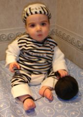
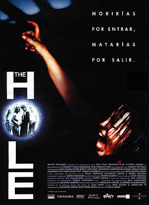
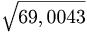

Alumno
 De: La Frikipedia, la enciclopedia extremadamente seria.
De: La Frikipedia, la enciclopedia extremadamente seria.
El alumno es aquel ser humano, basura interestelar o polvo cósmico de la suela del zapato del secretario del poder del grandísimo Darth Vader, que ha pasado el 25% de las horas de su vida en un aula y que probablemente se tirará unos añitos más pegado al culo de su silla.
Características
 Típico alumno repetidor en el aula.
 Película inspirada en un instituto de la localidad madrileña de Parla
Al alumno también se le conoce como estudiante. Esto es un error porque el alumno, en contra de lo que piensan algunos expertos, no estudia. La vida del alumno se limita a:
- Fingir que estudian mientras chatea con sus ligues pervertidos
- Sentarse pasivamente frente a una pizarra de color verde y escuchar la música que el profesor fabrica
- Los más espabilados intentan comunicarse con alguien y raramente lo consiguen. Para ello, se ha intentado crear un lenguaje de signos, escribir notitas, leer los labios, comunicarse por código Morse a base de patadas, mandarse SMS (sólo los ricos o los hijos de los operadores de Telefónica)...
- Escuchar su mp3 tapándose la oreja, no vaya ser que el profesor se atisbe
- Jugar al Prince of Persia
- Malformarse para su futuro laboral incierto
- Dibujar (dibujos).
- Hacer lo que se hace en series como Los Serrano, Compañeros, SMS ...
- Reírse de IP anónima
- Estudiar y atender. (Sólo frikis como tú y yo)
- Cambiar x-382 veces de posición sobre su silla
- Calzar la mesa
- Estudiar las distintas razas de su clase.
- Cortarse con el compás o cúter(únicamente los EMOs)
- Escribir letras de canciones en los cuadernos
- Creerse especial
- Marginar a alguien
- Hacer los deberes de hace un mes si son interesantes
- Hacer los deberes de otros (sólo frikis)
- Tirarse pedos y esperar a ver cuánto tardan los de alrededor en darse cuenta
- Hacer equilibrio con una sola pata de la silla
- Pensar en artículos para La Frikipedia
Como ves, se asemejan mucho a lo que harían un grupo de adolescentes en un zulo a 40.000 metros bajo tierra.
Los mejores alumnos (clasificados según su interés sociocultural) son los que tienen entre 12 y 18 años. Antes de los 13 años se lo pasan bien y después de los 18 años o estudian o empiezan a replantearse la vida y a estudiar.
Entre los 13 y los 18 años los alumnos intentan aprobar las etapas de la E.S.O.(Educación para Sinsustancias Ortopédicas) y el BACHILLER {(Bastarda Actividad Culpable de Hacer Ineptos Lerdícolas Lunáticos Españoles y Rumiantes(de chicles)}.
Tipos de alumnos
Los alumnos se pueden clasificar de muy distintas formas. Todos atienden a un grupo de la sociedad joven española (SJA), véanse: frikis, canis, raperos, emos, jebis, punks, reggaetoneros, discocholeros, pijos...
Se pueden clasificar también según su comportamiento en clase.
- Empollones: clase discriminada injustamente por su sobresaliente media académica. Suele tener el SAS. Dentro de este grupo a veces también nos encontramos a ciertos especímenes como el pelota, el machaca, el que
es parece buena persona. En el 0,0000000[...]0001 por ciento de los casos, el empollón tiene más de 1 amigo (no imaginario)
- Rácanos: dícese de aquel ente que llega a clase sin el material necesario y que acostumbra de pedírselo a sus compañeros. Suele abusar de los niños gorditos con gafas que van de buenos samaritanos por el mundo.
- Enamorados: dícese de aquellas personas maculinas y femeninas que tienen en su cuerpo una serie de hormonas que provocan un extraño sentimiento que se denomina amor. Suelen escribir con el cúter y/o compás el nombre de su amado/a, pueden llegar a rajarse el brazo solo para llamar la atencion (tipico de los emos), también suelen firmar las paredes de las clases, las sillas, las mesas, los suelos, las escuadras de los compañeros e incluso se lo cuenta a su tutor. Este tipo de relaciones dura entre tres semanas y 3 meses. Luego se volverán a enamorar y pensar que esa relación es diferente.
- Relaciones Públicas: son las TIC (Tecnologías de la Información y la Comunicación) del instituto/supercole. Se dedican a intercambiar deberes, noticias e información entre clases. Aspiran a estudiar Periodismo, Publicidad, Markéting o a dejar los estudios y ser relaciones públicas de RaDicAl (!!!!). A veces este tipo se asemeja con el del graciosillo.
-
Fracaso de Gracioso: típico personajillo que se cree amigo de todo el mundo porque tres tontas le ríen las gracias en clase. En realidad, no tiene ningún amigo verdadero y a la hora de la cafetería, el recreo o el bocadillo, todo el mundo piensa que es un acoplado. Nadie dice nada y todo el mundo feliz. Este personaje y el anterior suelen explotar al máximo su tarifa plana a números nacionales y el empollón de la clase ya tiene su número restringido en la agenda.
- Tonta: vividora de la vida que se dedica a visitar los inframundos de las discotecas light, que suele fumar o hacer que fuma. Compone la música de fondo con su estúpida risa. Da pie al graciosillo a que siga intentando hacer gracia y se cree la más popular. No lo es. Aunque parezca mentira
me pongo colorada cuando..., la tonta a veces saca buenas notas en todas las asignaturas menos en matemáticas. En su estudio se dedica a aprenderse todo el libro de memoria y suele ser la típica que no comprende la pregunta de un examen y responde lo que no era.
- Ausen o Vacacionero: engendro que es conocido en el 'tuto' por su gran absentismo. Suele ser el más guay y su objetivo en la vida es ser el alumno que más veces repita 1º de ESO en España. Suele tener acongojados a sus compañeros ya que tiene 3 años más y una barba que flipas. Cuando está en clase se dedica a hacer como que piensa para inventar una nueva forma de sentarse en la silla. Su característica barba o sus enormes patillas son la envidia de sus compañeros. Debido a su vello facial es venerado por los pasillos. Generalmente, suele ser el más guay
- Pelota o Chivato: el tipico alumno que busca llevarse bien con el profesor ya sea porque tiene cierta dependencia al profesor, porque le gustan maduritos o porque cree que asi el profesor le ayuda en los examenes... se dedica a alabar al profesor, darle manzanas y hacer el buen alumno, chivandose de lo que hacen los demas alumnos para que los castiguen. Su unico amigo suele ser el profesor
- La niña buena: especie mutada del pelota, la niña buena es la niña que finge atender cuando puede y procura hacerse la buena ya sea ante los profesores o ante los demas, a diferencia de la especie anterior, esta se diferencia porque se chiva en privado al profesor y se hace la buena tanto con los compañeros como con los profesores para tenerlos de su lado y que ninguno sospeche de ella
Semejanzas respecto al ser humano
El alumno, a primera vista, parece un ser humano pequeño. Se dice que está en una fase de crecimiento pero no es así. Es un proyecto fracasado de hombre que vaga por su cárcel instituto hasta que por fin es liberado. Se parece más a un preso que a un ser humano. Se parece a un ser humano en:
- Tiene dos ojos
- Tiene una nariz
- Tiene una boca
- Tiene dos orejas.
- Tiene entre 5 y 4 extremidades
- Tiene 20 dedos. (Margarita Seisdedos no es un ser humano)
- Tiene casi el 99% de sus sistemas y órganos internos iguales.
Diferencias respecto al ser humano
Como ya he dicho, el alumno no es un ser humano. Y como no es un ser humano, algo diferente a este último debe tener:
- El alumno no piensa nunca.
- El alumno (chico) tiene pelo.
- El alumno no trabaja.
- El alumno intentará no llevar nunca gafas.
- El alumno se cree super especial.
- El alumno se aburre 16 horas al día.
- El alumno no conduce.
- El alumno se cuela en el metro.
- El alumno es mala persona y miente a sus padres.
- El alumno convive con los de su hábitat.
- El alumno va a Pacha/Kapital LIGHT.
- El alumno no lee.
- El alumno no ve el interesante cine independiente.
- El alumno hace botellón.
- El alumno es totalmente libre en verano.
- El alumno se aburre en el Messenller el 80% de las veces, aunque no lo diga.
- El alumno insulta a los extraños de su hábitat con la palabra 'friki'. (No saben que es un orgullo)
- El alumno (que no lleva uniforme) viste siempre de "chúndal" o si va a un privado, está a la penúltima en tendencias.
- El alumno no usa el movil para hablar con gente.
- El alumno se agrupa con otros de su especimen (ejem:empollones con empollones, frikis con frikis, chivatos con chivatos... etc)
- El alumno esta entrenado para actuar de forma colectiva siguiendo la ley de la oveja (todos detras del carnero) , estan alienizados (vease Karl Marx
¿Qué hace un Alumno?
El alumno generalmente realiza las siguientes actividades:
El Alumno...
- El alumno no saca ceros; colecciona huevos de colores rojos.
- No copia; ejercita la vista.
- No sopla los exámenes; pone las respuestas en común.
- No se distrae; examina las moscas.
- No se duerme; reflexiona.
- No come chicle; fortalece la dentadura.
- No habla; intercambia opiniones.
- No enfada al Profesor; estudia sus reacciones.
- No llega tarde a clase; se culturiza en el exterior.
- No esta en las nubes; examina los fluorescentes.
- No critica al profesor; le saca defectos.
- No lee revistas o periódicos; se informa.
- No lo suspenden; se toma unas vacaciones.
- No va al despacho del director(a); lo va a visitar.
- No le echan de la clase; va a tomar aire fresco.
- No dice lisuras o malas palabras (ctm hdp csm …#$%&/!?); solo se desahoga.
- No destroza la clase; lo decora a su gusto.
- No pega a otros alumnos; les regala sentimientos
- No escupe; se descongestiona
- No tira papeles; estudia la gravedad
- No dice groserías; amplia su vocabulario
- No ve porno en la clase; analiza el cuerpo humano
- No ralla las mesas; expresa una forma de arte
- No molesta; expresa sus opiniones
Oración del alumno

|
Profesor nuestro que estás en tu cátedra
benditos sean tus dieces
danos nuestra lección de cada día
perdona nuestras chuletas
así como nosotros perdonamos tus muermazos
no nos dejes caer en el suspenso
y líbranos de todo castigo físico
Ramén.
|

|
| Oración del alumno
|
Autor(es):
- Nexo
- Aque
- Viento
- El Sevillano
- Setokayba
- Ipso Facto
- Putoamo
- EdgardoZ
- Thabita
- Setwins
Frikipedia 2005-2016, Licencia
GFDL 1.2 - Extraído por FrikiLeaks